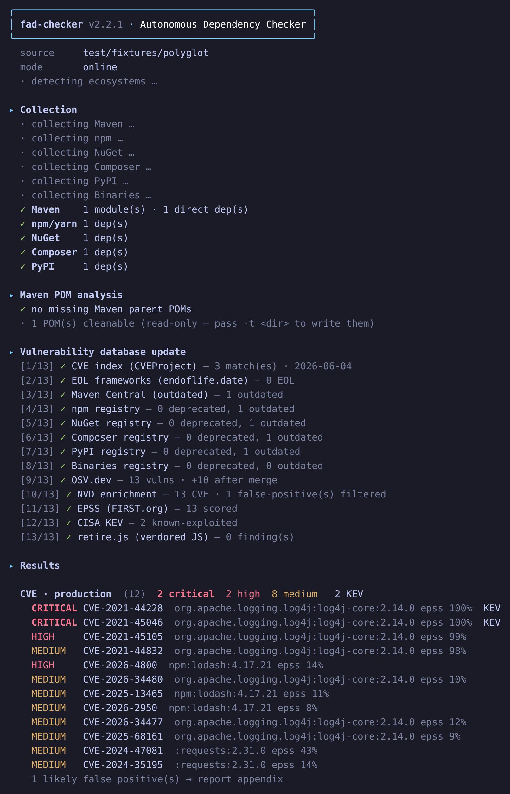

Audit every dependency.No build. No leaks.
A polyglot CVE · EOL · outdated · license scanner that reads your source tree directly — no mvn, no npm install, no Docker. Findings merged from CVEProject, OSV, NVD & retire.js, prioritised with EPSS + CISA KEV, an audit-ready HTML & Word report (plus CycloneDX SBOM & CSAF VEX), and an air-gapped mode for confidential code.
npm i -g fad-checker && fad -s ./your-project

Nine ecosystems + vendored JS + embedded JARs + native binaries
Point it at any checkout — multi-module, monorepo, polyglot. It parses manifests and lockfiles directly, and falls back to best-effort (pinned versions) when there's no lockfile.
Built for audits, not just CI
No build, polyglot
Reads pom.xml & lockfiles across all nine ecosystems. No JDK, no install, no Docker — audit a checkout you can't even compile. It even cracks open committed .jar/.war/.ear binaries (fat-jars, shaded uber-jars) in-memory to scan the libraries shaded inside them.
Merged sources, fewer false positives
CVEProject + OSV.dev + NVD + retire.js, merged & deduped, then cross-checked against NVD CPE version ranges to filter noise.
Risk-based priority
Every CVE enriched with EPSS (FIRST.org exploit-prediction) and CISA KEV (known-exploited). A composite score puts exploited-in-the-wild first, not just the highest CVSS.
Beyond CVEs
Flags end-of-life (endoflife.date), deprecated / abandoned / yanked, outdated versions, and licenses (SPDX + copyleft policy) — signals most scanners skip.
Reports you can hand over
One self-contained HTML + Word-compatible .doc, organised by ecosystem and by the manifest that declares each dep, with per-tool fix recipes.
Exports & CI gating
Emit CycloneDX 1.6 SBOM, CSAF 2.0 VEX, flat JSON and SARIF 2.1.0 (GitHub/GitLab code scanning). Gate with --fail-on critical|kev; triage false-positives via --ignore / --vex.
Air-gapped / PASSI
Export an anonymized descriptor (public coordinates only), enrich online, report offline. The confidential codebase never leaves the enclave.
Maven private-dep cleanup
Strip private/internal dependencies into a parallel tree of cleaned POMs, ready to feed straight into Snyk.
Native binaries, by checksum
Committed .dll/.exe/.so/.dylib (magic-byte confirmed — images/assets are never picked up) are identified by hash via deps.dev + CIRCL: flags tampered/unknown files and libraries that should be declared dependencies. No malware/AV lane.
Private registries & config files
Point it at private Nexus/Artifactory (Maven), Verdaccio/GitHub Packages (npm), devpi (PyPI), Gemfury (Ruby) or GOPROXY (Go) — tried first, public last, Basic or Bearer auth. Stash reusable defaults in .fad-env.json / --config or the FAD_CHECKER_ENV variable, and prune sub-paths with gitignore-style --exclude-path.
Unmanaged vendored JS, inventoried
Every standalone JS lib committed into the tree (jQuery, Bootstrap, PDF.js, …) that no package manager governs is inventoried — vulnerable or not (via retire.js --verbose). A cyber-hygiene constat on unknown-provenance third-party code, the JS twin of the native-binary scan.